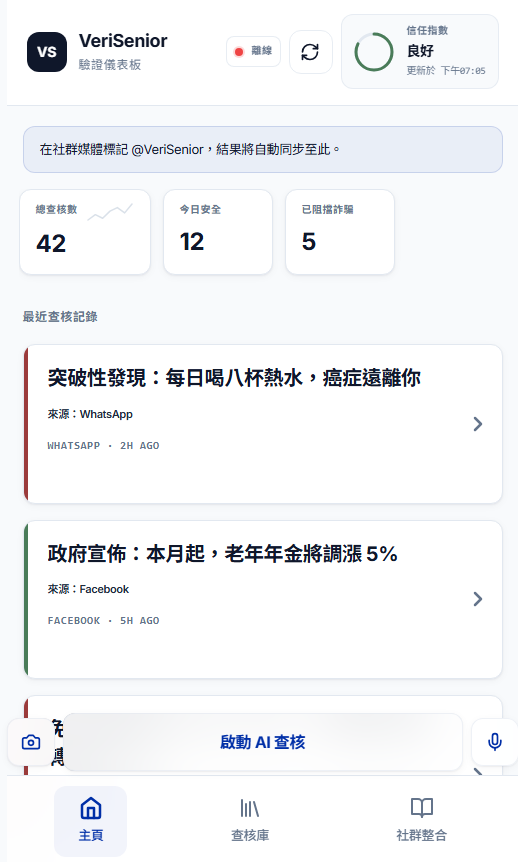
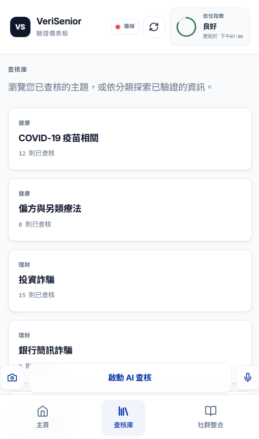
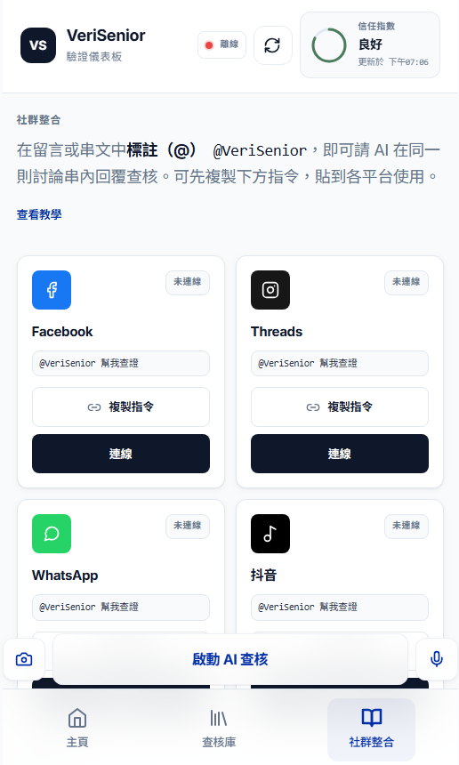
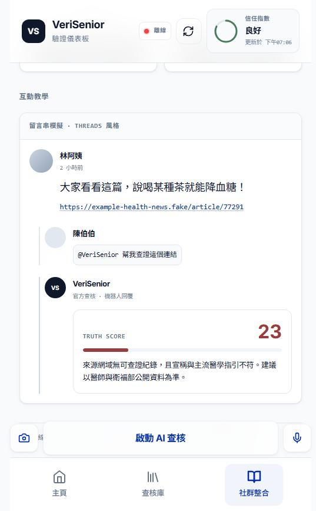

Home Dashboard / 首頁儀表板
Recent checks, trust score, and quick AI verify button designed for seniors.
VeriGuard AI · RightPick Technology Limited
One tap to verify. Share suspicious posts from WhatsApp, Douyin, or any app—get clear, trustworthy answers in seconds.
Simple steps for seniors: @mention the bot where you already chat.
長輩可直接在熟悉的社群平台標註 @VeriSenior，即時取得查證結果。
Open the chat, type @VeriGuard and send the message you want checked. 在聊天室輸入 @VeriGuard 並送出想查證的訊息。
Douyin / 抖音
In comments or DM, @ mention VeriGuard AI and paste the claim for instant verification. 在留言或私訊標註後貼上內容即可快速查證。
See how VeriGuard AI labels claims—Fake vs True—with clear explanations.
透過「真實 / 不實 / 注意」標示，協助長輩快速理解訊息可信度。
“Drink lemon juice and baking soda to cure cancer in 2 weeks.”
False. No single home remedy cures cancer. Always follow your doctor’s plan.
“Forward this to 10 people or you will have bad luck.”
Hoax. Chain messages have no power over your life or device.
“WHO recommends handwashing with soap to reduce infection spread.”
Correct. Supported by WHO and national health authorities.
“Your bank will never ask for your PIN or password by SMS or phone.”
Correct. Legitimate banks do not request sensitive details this way.
Real product interface samples with consistent visual language and senior-friendly readability.
以下為介面示意圖，呈現首頁、查核庫、社群整合與互動教學流程。

Recent checks, trust score, and quick AI verify button designed for seniors.

Topic-based browsing for verified claims in Health, Finance, and Social News.

Cross-platform cards for Facebook, Threads, WhatsApp, and Douyin mention flows.

Step-by-step mention example with AI response in Traditional Chinese.
VeriSenior is a fact-checking assistant designed for seniors. It helps users quickly verify suspicious social posts, links, and claims with simple Traditional Chinese explanations.
VeriSenior 是專為長者設計的查證助手，以清楚易懂的繁體中文提供解釋與建議。
Built for high trust, senior accessibility, and cross-platform social verification.
以高可信度、長輩友善與跨平台社群整合為核心設計。
Frontend 前端
React + Vite + TypeScript + React Router
UI 介面
Tailwind-style utility classes + Lucide icons
Backend 後端
Node.js + Express + TypeScript
Deployment 部署
Frontend: GitHub Pages / Backend: HTTPS Node host
Deployment Note 部署說明
GitHub Pages serves only static files, so real-time API/webhook features require a separate backend deployment. Without backend, the app can still run in mock/demo mode for UI and flow testing.